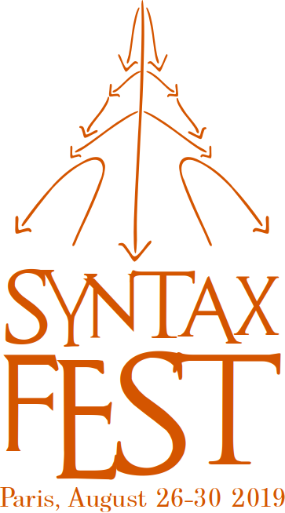

|

|
SyntaxFest 2027
Prague, August 30 – September 3 2027
5 events in 1 Fest
The SyntaxFest brings together five events with partially overlapping research topics including
empirical syntax, linguistic annotation, statistical language analysis, and natural
language processing:
- Depling: Conference on Dependency Linguistics
- IWPT: International Conference on Parsing Technologies
- Quasy: Workshop on Quantitative Syntax
- SLiDE: Workshop on Structured Linguistic Data and Evaluation
- UDW: Universal Dependencies Workshop
Venue
SyntaxFest will take place from Monday August 30 to Friday September 3, 2027.
Shared reviewing process
On the
submission site, authors submit their paper only once for the whole SyntaxFest,
but they can uncheck conferences they do not wish their paper to be considered for.
If the paper is deemed appropriate for more than one of the selected conferences,
the SyntaxFest joint organization committee decides on the final placement of the paper,
which implies the day of the presentation and the proceedings the paper will appear in.
Paper submission information
Papers should describe original work; they should emphasize completed work rather than intended work,
and should indicate clearly the state of completion of the reported results. Submissions will be judged on correctness,
originality, technical strength, significance and relevance to the conference, and interest to the attendees.
Reviewing of papers will be double-blind. Therefore, the paper must not include the authors’ names and
affiliations. Furthermore, self-references that reveal the author’s identity, e.g.,
“We previously showed (Smith, 1991) …”, must be avoided. Instead, use citations such as “Smith (1991) previously showed”.
Papers that do not conform to these requirements will be rejected without review.
Chairs
The chairs for each event are:
- Depling
- IWPT
- Quasy
- SLiDE
- Jan Hajič (Charles University)
- Erhard Hinrichs (University of Tübingen)
- Sandra Kübler (Indiana University)
- Petya Osenova (Bulgarian Academy of Sciences)
- James Pustejovsky (Brandeis University)
- UDW
- Kaja Dobrovoljc Zor (University of Ljubljana)
Local organizing committee of the SyntaxFest
|